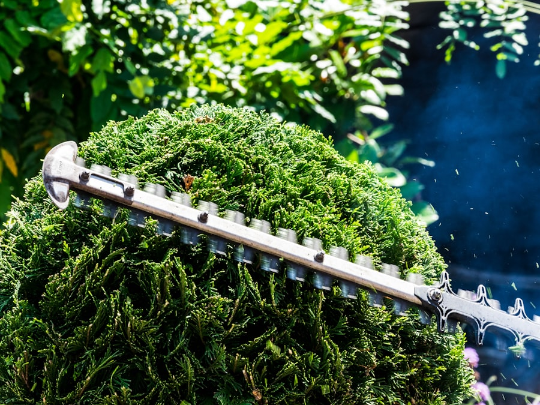

01 · Snoeien
Snoeien van bomen & struiken
Regelmatig snoeien houdt bomen en struiken gezond en in vorm. Als hovenier in Katwijk snoeien wij vakkundig op het juiste moment, zodat uw beplanting sterk blijft en uw tuin er verzorgd uitziet.
Offerte aanvragen